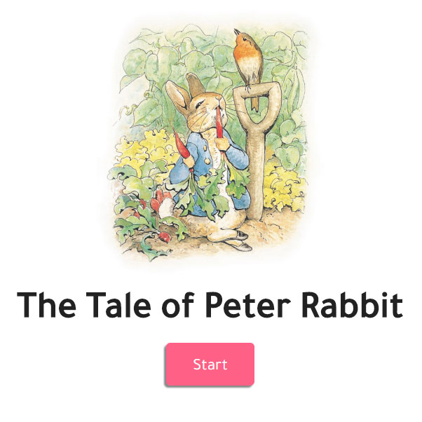

The Tale of Peter Rabbit
This project was part of UQ's DECO1400 Introduction to Web Design 2018 Semester One course. The task was to create an interactive story website for children aged 13 and under, utilising an existing story and transforming it into a digital experience. This project also served as my first real introduction into the world of web design.
View Site